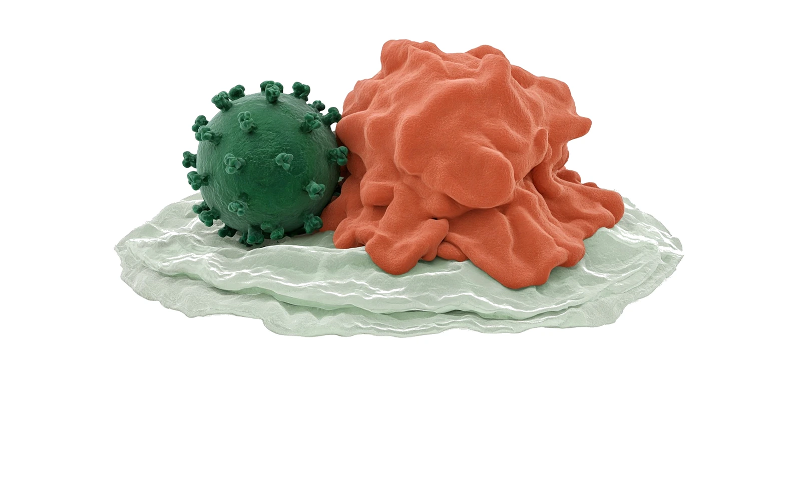
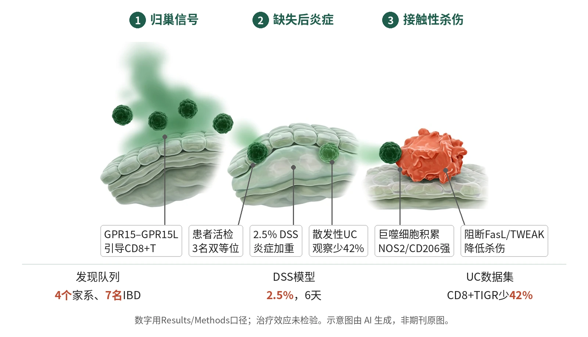

封面示意：深绿CD8调节T细胞紧贴赤陶红炎性巨噬细胞。图片由 AI 生成，非原文图片。
人类遗传、活检和小鼠DSS模型显示，GPR15引导CD8+TIGR结肠归巢并限制肠炎；散发性UC结肠活检中该群体减少42%。

- 有害GPR15变异削弱GPR15L趋化
- CD8+TIGR难以归巢结肠
- DSS后巨噬细胞积累激活
- FasL/TWEAK介导接触性杀伤
机制图概括作者用人类遗传、患者活检和小鼠DSS模型支持的模型：GPR15–GPR15L引导CD8+TIGR进入结肠黏膜，缺失后CD8+TIGR减少，F4/80+巨噬细胞积累；体外实验显示FasL/TWEAK介导杀伤，散发性UC中该群体减少42%。示意图由 AI 生成，依据原文结果绘制，非期刊原图，不代表分子比例
研究背景与待解问题
炎症性肠病可由遗传与环境共同驱动，早发病例尤其适合寻找单基因线索。已有超过90个基因与早发IBD相关，但GPR15在人肠道免疫稳态中的具体作用仍不清楚；它既被认为参与小鼠CD4+ Treg或效应T细胞归巢，也被描述为GPR15L响应受体。
本文的切口是把早发IBD家系、患者变异功能、小鼠归巢和结肠炎模型串联起来。关键问题不是泛泛证明GPR15“抗炎”，而是确认它把哪一类T细胞带到结肠黏膜，以及这些细胞如何限制损伤后的髓系炎症。
研究设计
人类发现部分从4个无关家系的7名IBD个体开始，结合WES寻找罕见蛋白改变变异；多数患者幼年起病。研究随后在土耳其/卡塔尔家系队列、伊朗队列及AoU等资料中做GPR15变异关联，并用293T、HeLa、CHO-K1、Jurkat和患者T细胞检测表面表达、Ca2+通量与GPR15L迁移。
机制部分用患者活检、公开和自建scRNA-seq、Gpr15−/−与条件敲除小鼠、过继转移和肠类器官共培养验证归巢。DSS模型按Methods给2.5% DSS饮水6天，再给普通水6–7天；样本量未按统计学计算预设，关键组间差异按图注统计检验。
核心结果
变异关联IBD
土耳其/卡塔尔家系队列有647人，其中74例IBD；伊朗队列有1,692人，其中109例IBD。与无IBD对照比较，作者找到18个罕见单等位GPR15变异，MAF<0.001，且与IBD显著相关。发现队列还显示双等位携带者3/4、单等位携带者4/10出现临床表现，提示外显不全。
变异损伤归巢
功能实验把变异与归巢缺陷连接起来。WT和F159I在CHO-K1中表面表达最高，D306N、Y132S和Y132S/F159I下降，Q281X和Y215X缺失；GPR15L诱导的Ca2+内流总体随表面表达降低，但F159I是例外。患者T细胞向GPR15L迁移呈WT/M降低、M/M进一步降低；Pt 1.1中WT GPR15可恢复表面表达和迁移，D306N、Q281X最少或不能救回。
缺口指向CD8
组织层面的核心读出不是CD4+ Treg缺口。相反，3名患者十二指肠和结肠活检中FOXP3+ Treg/CD4+ T细胞比例较高；结肠活检显示CD8+ T细胞在上皮和固有层均明显减少。因此，GPR15–GPR15L轴在人类主要引导一类结肠CD8+ T细胞，而非CD4+ Treg区室。
DSS定位保护细胞
在2.5% DSS后，Gpr15−/−小鼠体重下降更快、炎症更重、结肠缩短更明显，Gpr15+/−表现为中间改变。条件敲除进一步定位到CD8+ T细胞：Gpr15fl/fl Cd8cre加重DSS结肠炎，而Gpr15fl/fl Foxp3cre未加重。图4主要小鼠组为n=11/组，并按ANOVA或Mann–Whitney等检验。
巨噬细胞被杀伤
免疫细胞读出指向巨噬细胞，而不是树突细胞扩增。DSS第3天，Gpr15−/−结肠F4/80+巨噬细胞增加，CD103+树突细胞未增加；第5天巨噬细胞NOS2和CD206染色强。体外共培养显示：阻断FasL或TWEAK降低杀伤，联合阻断与单用抗FasL相当，提示FasL占主导。散发性UC中CD8+ TIGR减少42%，Crohn病终末回肠也显著减少。
机制解读
原文实验证明：原文直接证明了多种有害GPR15变异降低受体表面表达、Ca2+信号和GPR15L趋化，但F159I在表面表达和迁移上是例外；患者T细胞与Jurkat、CHO-K1结果一致，Pt 1.1的WT GPR15重构可救回迁移，而D306N和Q281X不能。患者活检和Gpr15−/−小鼠共同显示结肠CD8+ T细胞缺失，CD4+ FOXP3+ Treg未显示同向缺陷。
实验支持各环节，但原文把“CD8+ TIGR经FasL/TWEAK杀伤炎性巨噬细胞以防结肠炎”整体表述为提示性模型：2.5% DSS后Gpr15−/−结肠炎加重，CD8特异性而非Foxp3特异性删除复制该表型；F4/80+巨噬细胞积累且NOS2/CD206强阳性。体外活化CD8+ TIGR直接杀伤LPS激活巨噬细胞，阻断FasL或TWEAK降低杀伤，死亡受体机制主要由体外阻断支持。
作者推测：作者推测，CD8+ TIGR减少可能在散发性UC和Crohn病中削弱局部对巨噬细胞驱动炎症的约束；CD8+ TIGR的TCR可能识别自身、饮食或微生物来源抗原，但这些抗原未被本文确定。作者还提出，增强GPR15通路或控制致病性巨噬细胞活性，可能成为IBD治疗方向。
局限与不确定
- 第一，遗传外推受外显不全限制。Y132S的群体频率限制单基因解释：MAF=0.0012，在gnomAD v.4.1.1中有1,916名杂合子和20名纯合子，作者因此把它解释为低功能等位基因，而不是完全外显致病变异。
- 第二，发现队列仅4个无关家系7名IBD个体；变异携带者临床异质性大，双等位外显率为3/4，单等位为4/10。散发性UC分析为HC n=8、UC n=7，Crohn病为HC n=8、CD n=20，能提示相关，但不能替代前瞻性风险估计。
- 第三，小鼠样本量未按统计学计算预设，研究者因基因型分组未盲法；DSS模型用2.5% DSS造成急性上皮损伤，随访到第9天或第10天，不能覆盖慢性复发或长期修复。第四，本文未确定CD8+ TIGR的抗原特异性，也未给出靶向GPR15治疗的剂量和安全窗。
临床/产业意义
如果后续队列能确认GPR15变异、CD8+ TIGR缺口与临床分型的关系，这一工作可把一部分IBD从“广义黏膜炎症”推进到“归巢受损—巨噬细胞失控”的机制分层。GPR15也因膜受体属性，可能成为诊断或干预节点。
但这些结论仍应限定在本文证据范围内：患者材料支持遗传关联和组织缺口，小鼠与体外实验支持因果机制；散发性UC和Crohn病中的42%及显著减少仍是单细胞数据集关联，尚不能说明增强CD8+ TIGR已在患者中验证获益。